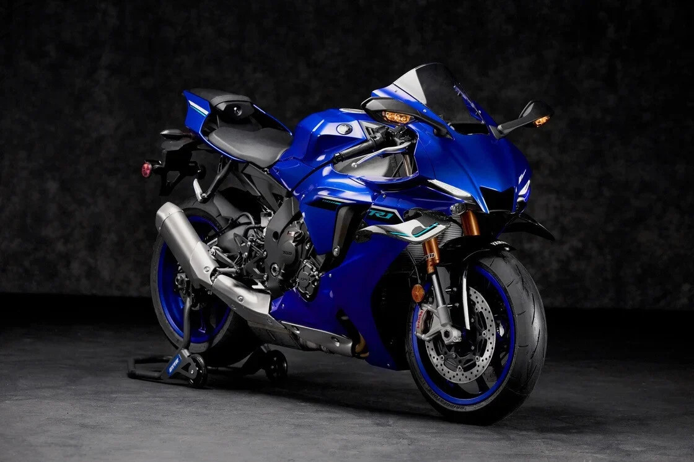

Motos Deportivas
Las motos deportivas están hechas para ofrecer velocidad agilidad y rendimiento Se destacan por su postura agresiva, aerodinámica y materiales ligeros.
Tienen motores potentes (generalmente de 600cc a 1000cc), frenos de alta calidad, suspensiones ajustables y optimizaciones para curvas rápidas y frenadas bruscas.
Algunos modelos famosos incluyen la Yamaha R1, Kawasaki Ninja ZX-10R, Suzuki GSX-R1000 y Honda CBR1000RR. Todas ellas son usadas tanto en carretera como en competencias.

Honda CBR1000RR
Una de las motos más rápidas y tecnológicamente avanzadas del mundo.

Yamaha R1
Ideal para circuitos de alta velocidad, con aerodinámica de competición.

Kawasaki ZX-10R
Una superbike con caracteristicas entre potencia, manejo y diseño.